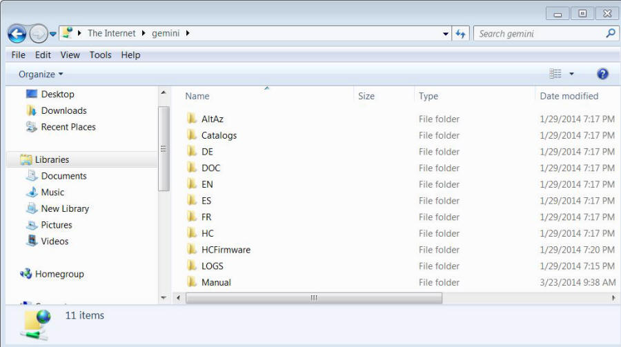
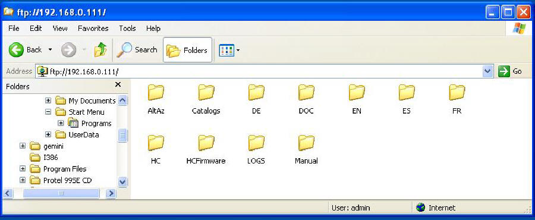

| Example of File Explorer FTP with Win 7 and Win XP |
|  |
|
This is a Win 7 version of my SDcard contents. Please notice that some of the files
have been deleted such as NewGem.bin. |
|  |
|
This is a Win 7 version of my SDcard contents. Please notice that some of the files
have been deleted such as NewGem.bin. |
| Both used the File Explorer and http://admin@gemini or for XP (because I am using a Virtual XP) ftp://admin@192.168.0.111 which is the IP address of my Gemini-2 in the address bar of the respective File Explorer. Either address method should work. |